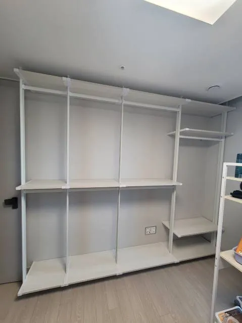

Apartment
아파트 드레스룸
시스템행거 이전
아파트는 평면마다 드레스룸 모양이 달라 배치를 다시 잡는 일이 많습니다.
아파트 드레스룸은 안방 옆 워크인, 안방 안쪽 알파룸, 작은방 전체를 쓰는 형태 등 평면마다 모양이 다릅니다. 이전 집에서 ㄷ자로 쓰던 행거가 새 집에서는 한 벽밖에 쓸 수 없는 경우도 있습니다.
아파트 이사에는 엘리베이터 사용 예약과 작업 가능 시간 같은 단지 규정도 따라옵니다. 코니처는 새 집 평면과 단지 조건을 먼저 확인하고 해체·운반·재설치 일정을 짭니다.

Situations
아파트 드레스룸 유형별 포인트
워크인 드레스룸
통로 폭을 확인해 선반 깊이와 배치를 정합니다.
알파룸·파우더룸
거울과 화장대 위치를 새 공간에 맞춥니다.
작은방 전체 사용
방 전체를 드레스룸으로 쓸 때 세 벽 배치를 검토합니다.
평수를 줄여 이사
행거 일부만 설치하고 나머지는 정리해 둡니다.
Checklist
아파트 이사 체크 항목
| 항목 | 확인 내용 | 필요한 이유 |
|---|---|---|
| 드레스룸 평면 | 새 집 평면도 | 배치를 정합니다 |
| 엘리베이터 | 이사용 사용 예약 | 운반 시간을 맞춥니다 |
| 작업 시간 | 단지 규정 | 방문 시간을 정합니다 |
| 천장 | 높이, 몰딩 여부 | 폴 고정 위치를 정합니다 |
| 에어컨·환기구 | 위치 | 선반 배치를 조정합니다 |
Process
아파트 이전 진행 순서
평면도 확인
새 집 드레스룸 모양과 치수를 확인합니다.
단지 규정 확인
엘리베이터 예약과 작업 시간을 맞춥니다.
해체
기존 집에서 칸별로 해체합니다.
운반·설치
새 드레스룸 모양에 맞춰 설치합니다.
점검
통로 폭과 수평을 확인합니다.
FAQ
자주 묻는 질문
관리사무소에 따로 신고해야 하나요?
단지마다 다릅니다. 이삿짐과 함께 엘리베이터 사용을 예약해 두시면 됩니다.
새 아파트 드레스룸에 기본 선반이 있어요
기존 선반을 그대로 둘지, 가져온 행거와 어떻게 함께 쓸지 사진을 보고 함께 정합니다.
워크인 통로가 좁아요
선반 깊이와 서랍장 위치를 조정해 통로 폭을 확보합니다.
입주 청소 전에 설치해도 되나요?
청소 후에 설치하시는 게 좋습니다. 입주 일정을 알려주세요.
파우더룸 거울도 옮겨지나요?
행거에 결합된 거울은 함께 옮깁니다. 벽에 따로 붙은 거울은 사진으로 먼저 확인합니다.